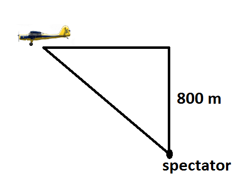
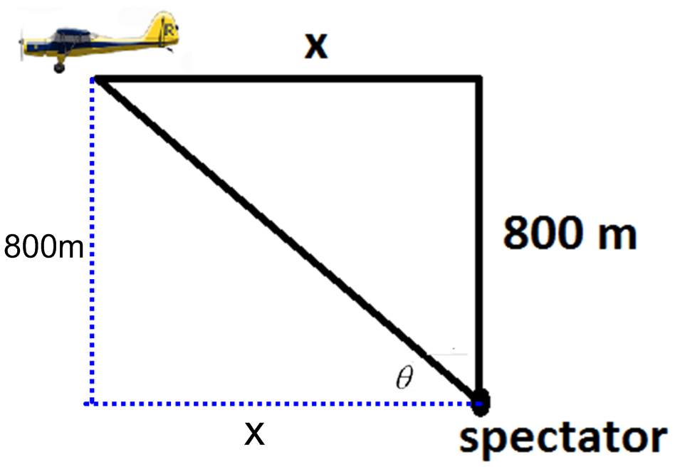

\begin{align*} \tan {\theta }&=\frac {800}{x}\\ \sec ^2{\theta } \cdot \frac {d\theta }{dt}&=\frac {-800}{x^2}\cdot \frac {dx}{dt}\ \text {(see $x$ and $\sec (\theta )$ solved below)}\\ 2 \cdot \eval {\frac {d\theta }{dt}}_{t=4}&=\frac {-800}{800^2}\cdot 200 \\ \eval {\frac {d\theta }{dt}}_{t=4}&=\frac {-800}{800^2}\cdot 200 \cdot \frac {1}{2}=-\frac {1}{8} \text {radians per second} \end{align*}
To solve for \(x\) when \(t=4\):
Use \(d=rt\). Here we have \(x=rt\). \(x=(200)(4)=800\) m
To solve for \(\sec {\theta }\) when \(t=4\):
Since the two legs of the triangle are equal, \(\theta =\frac {\pi }{4}\)
\(\cos \left ({\frac {\pi }{4}}\right )=\frac {1}{\sqrt {2}} \implies \sec \left ({\frac {\pi }{4}}\right )=\sqrt {2}\)